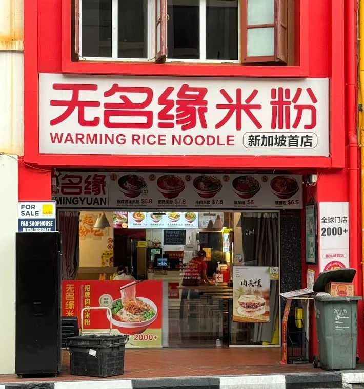
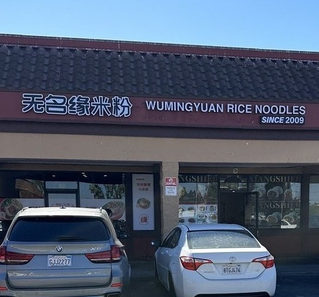
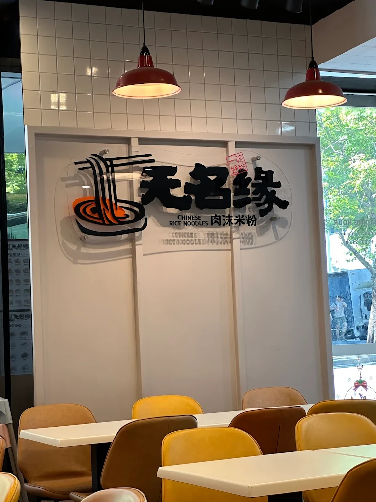

历史-Our History

Welcome to Warming Rice Noodles (aka Bee Hoon Delight), the ultimate destination for true connoisseurs of authentic Chinese rice noodles. Since its opening in 2009, the business has expanded to over 2000+ shops worldwide.
Wumingyuan Rice Noodles was founded in Harbin in 2009 by Ms. Cao Yunbo. It is a franchise chain brand with the industrial chain as its core. As the leading rice noodle chain brand, as of 2021, Wumingyuan's national stores have covered more than 200 cities across the country. The brand has been recommended by Harbin Radio and Television Station, Heilongjiang Daily, Heilongjiang Provincial Department of Commerce, and Heilongjiang Cuisine Association. It has also been recommended by CCTV's "Taste of Hometown" and
Tianjin Satellite TV's "Entrepreneurial Chinese" and is deeply favored by the Chinese
people. "A bowl of good rice noodles, China's Wumingyuan".
Up to now, Wumingyuan Rice Noodles has set up branches and built warehousing and logistics centers in 8 cities: Shenyang, Beijing, Shandong, Shanxi, Shaanxi, Hebei, Wuhan, and Henan. A market development strategy has been established with Northeast China as the center, radiating the South China and North China markets, and targeting the whole country. In 2020, Wumingyuan will enter the four major overseas markets of Europe, the United States, Asia, and Oceania, launch a globalization strategy, spread Chinese food culture to the world, and make the world fall in love with Chinese rice noodles.
After more than ten years of hard work, Wumingyuan has formed its core advantages integrating product research and development, brand operations, and supply chain. In the future, it will continue to make efforts in upstream agriculture and build an integrated industrial ecology from source agriculture to the dining table. Strive to provide consumers with a more delicious, healthier, more comfortable and more convenient dining experience.
Our success can be attributed to our affordable yet authentic Chinese Noodles. The noodles are handmade with rice grains picked specifically in the summer, which give the rice noodles its soft springy texture. It is then boiled with broth containing 20 different types of precious herbs together with aged meat,
giving the soup it's tangy, spicy flavour.
Worldwide Gallery
  